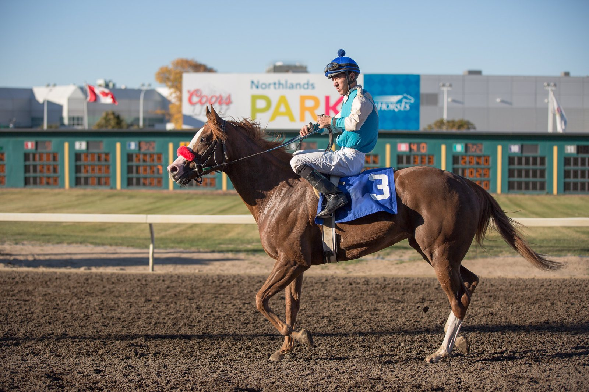

Sharadd regresa en York con seis libras de penalización tras su debut ganador
El potro de William Haggas, que ganó por amplio margen en Haydock el mes pasado, corre en York un novice para dos años sobre seis furlongs.

La victoria de Sharadd (IRE) en su estreno le pasa ahora factura. Por aquel triunfo en Haydock, conseguido con una ventaja amplia sobre sus rivales, carga seis libras de penalización obligatoria en su segunda salida.
La prueba es un novice para potros de dos años sobre seis furlongs en hierba, la misma distancia en la que debutó. La salida está fijada a las 15.18 en el Knavesmire.
Sharadd es hijo de Dark Angel (IRE) y corre con los colores de ARM Racing, que lo adquirió por 175.000 euros en la venta Orby Book 1. Lo prepara William Haggas.
Las seis libras le obligan a medirse con rivales que corren más ligeros. En York tendrá que demostrar que la ventaja que sacó en Haydock le alcanza para compensar ese peso extra.
Por Martín Larrañeta